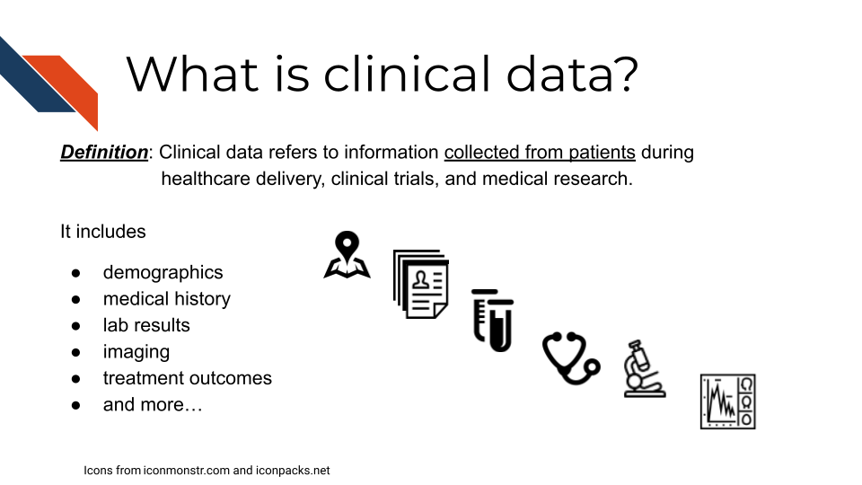
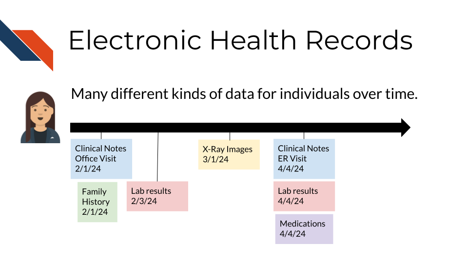
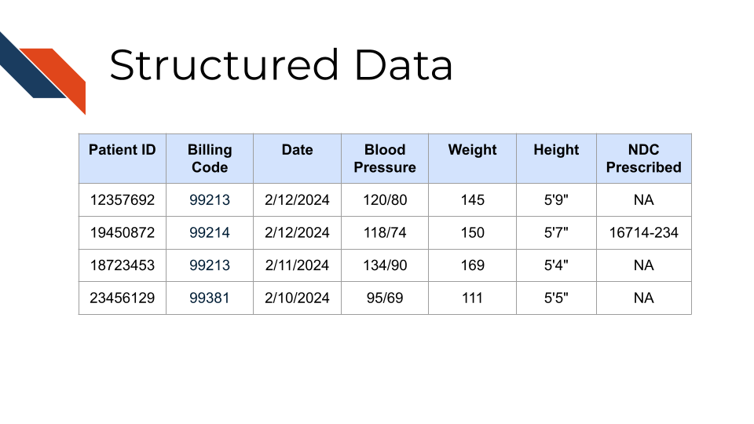

Chapter 2 Clinical Data Types
Clinical data is health-related information collected from patients throughout their healthcare journey. It may come in many forms and its sensitive nature requires careful management by researchers.
2.2 Clinical data is unique
Clinical data refers to information collected from patients during healthcare delivery, clinical trials, and medical research. Clinical data comes from a wide variety of sources and as such, requires careful consideration when designing, collecting, and analyzing this data. Unlike domains such as Finance or other areas in the sciences which predominantly use structured data with predictable and consistent formats, clinical data is often heterogeneous, integrating many forms of both structured and unstructured data: quantitative measurements, categorical data, genotyping, images, subjective narratives from patient notes, and objective observations or conclusions. The unstructured nature of free text from notes reflecting subjective patient experiences or qualitative insights from healthcare professionals especially adds a further layer of complexity. Furthermore, the contrast between patient and doctor notes reflects the dual perspectives of symptoms and formal diagnoses. In essence, clinical data’s unique blend of structured and unstructured components, along with its multidisciplinary nature, necessitates specialized methodologies for comprehensive analysis and interpretation in the realm of healthcare. Further, because clinical data contains sensitive, personal information about patients, there are additional security and ethics concerns in the handling and management of clinical data.
2.3 Major clinical data types
Clinical data can come in many different forms, including
- patient demographics
- medical history or records such as diagnoses, lab results, vital signs, medication records, or procedure history
- genetic reports
- health monitor data
- images
- scanned documents, and notes written by physicians, nurses, and other clinicians
- survey/ case report form (CRF responses)
- and more …

Some sources of clinical data are more prevalent and readily obtainable than others. For instance, notes, demographics, images, and histories or observations/records (lab results, vitals, medications, procedures) are often stored directly in electronic medical record systems making them more easily accessible and so are the focus of most Electronic Health Record (EHR) data research efforts.
2.3.1 Structured data
Observational records such as test results and demographic data are often collectively referred to as “structured data”, as they are stored in electronic health record databases and often provided to researchers in tabular form. Structured data types frequently used in EHR research consist of comprehensive longitudinal records of a patient’s interactions with a healthcare system and may include demographics, diagnoses, lab values, procedures, vitals, and medication records.

The structured nature of this data allows for it to be stored in tables which may be indexed by a patient or visit ID and often include timestamps and other supporting descriptors. For example, medication orders might specify the drug name, class, dose, unit, quantity, route, frequency, and other instructions.
Structured data tables often describe entries in terms of codes from standardized vocabularies. Diagnoses might be described with codes from the International Classification of Diseases (ICD) vocabulary, lab tests with Logical Observation Identifiers Names and Codes (LOINC), medications with National Drug Code (NDC), and procedures with Current Procedural Terminology (CPT) codes. These terms, or “billing codes”, provide a common foundation that can be invaluable for identifying patients with a specific disease or who have received specified medications, particularly when integrating data from multiple sources.

As we’ve described it, structured clinical data is expected to have similarities, although specific details may vary based on the type of EHR being used and any customizations to the EHR for the specific environment or institution in which data was collected (e.g., any specialized pre-processing by institutional research offices prior to providing data to researchers). So it is important for researchers to consider differences present in their data if they’ve obtained it from multiple contexts or institutions.
2.3.2 Unstructured data / clinical notes
Clinical notes are, perhaps unsurprisingly, generally shared as seemingly straightforward text files. However, the simple format should not be taken as a suggestion that the data are easy to interpret. Some EHR systems contain literally dozens of types of notes, covering specialties such as pathology or surgery; specific moments in care such as admission or discharge; particular procedures such as colonoscopies; patient-provider interactions such as telehealth or phone encounters, and many others. In addition to differing in content, these sources may have different layouts and formats, ranging from free-form reports to structured SOAP (subjective, objective, assessment, and plan) formats or even templated procedure reports. Understanding the types of notes available in a given context and where relevant data might be found is a key step in effectively using clinical notes.

When used in EHR research, both structured data and clinical notes are generally de-identified to protect patient privacy. Patient ID numbers might be replaced with new identifiers, with linkages maintained by institutional “honest brokers” (Dhir et al. 2008) charged with providing clinical data for research purposes. In some cases, dates may be changed as well. Clinical notes are generally “de-identified” through specialized software designed to remove names, dates, locations, and other sensitive details. Researchers working with institutions to access clinical data should be sure to understand local data de-identification practices.